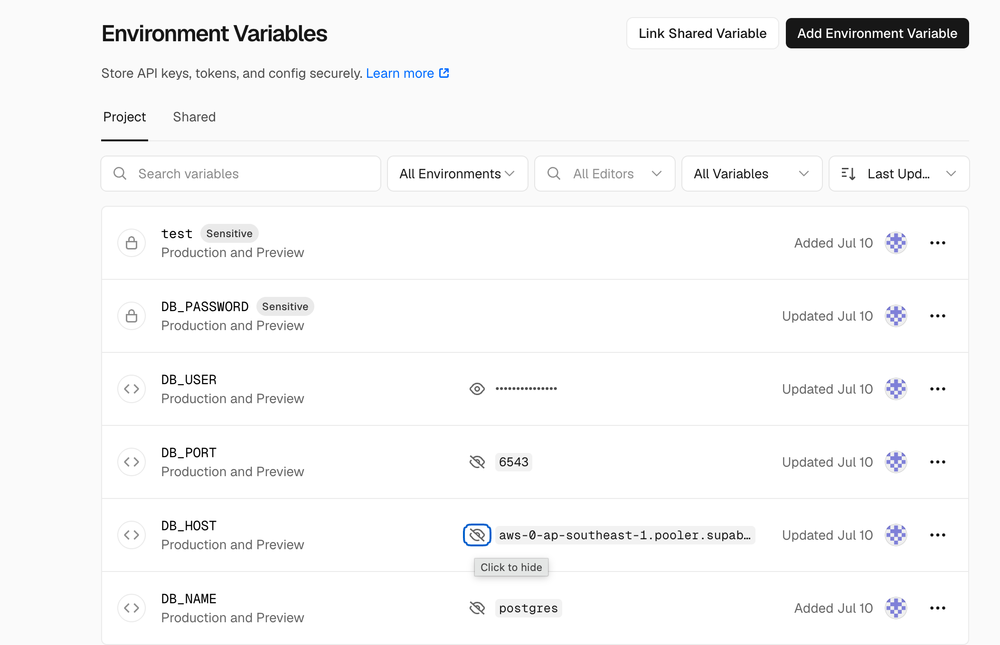
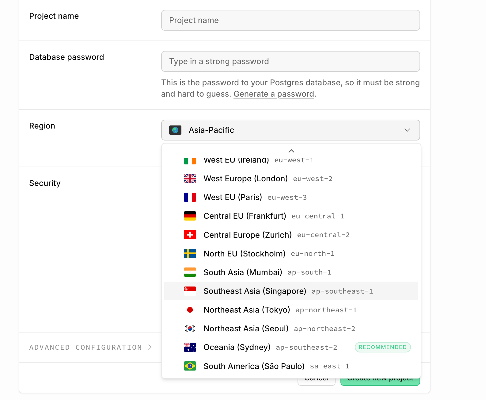
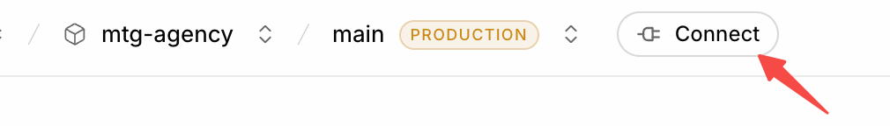
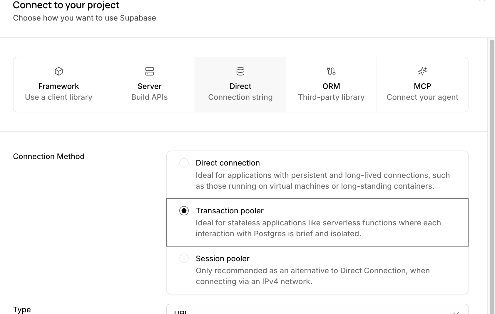
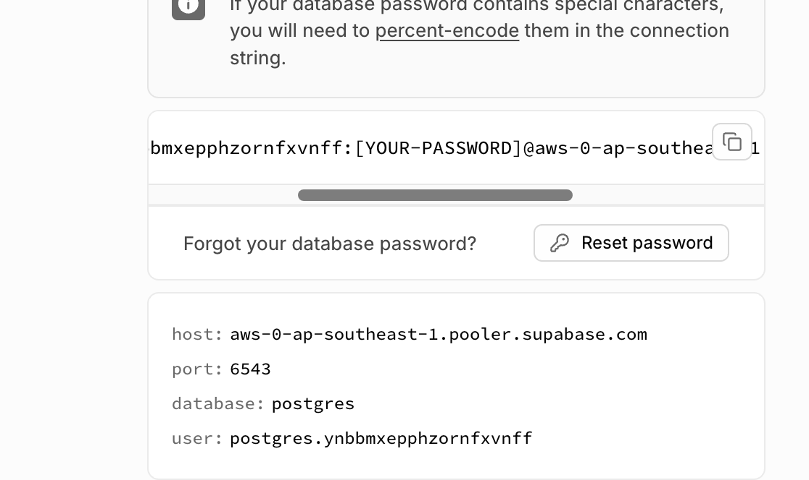
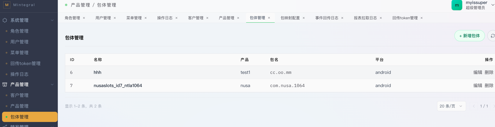
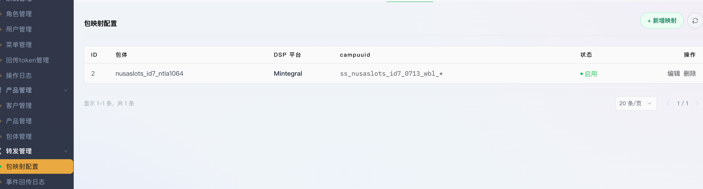

MTG Agency 是一套广告归因回传（Postback / S2S）转发服务，提供对外回传接收与管理后台能力，共用同一个数据库。
s2s 回传 → /install|/event → 先落库 callback_logs(pending) → 转发 postback.mintegral.net → 回写日志状态
项目已包含 vercel.json，推荐部署到 Vercel。本地自托管则用 next build + next start。
npm run build 成功。* 注意：Vercel 和 Supabase 数据库要选同一个地区（都是新加坡或者香港），这样才能降低延迟。
Vercel 和 Supabase 都是免费的（一些服务需要收费，免费的对于我们来说足够了），且运维自动化。如果想通过自己服务器来部署也是可以的，对接具体的服务器运营商。
| 变量 | 必填 | 说明 |
|---|---|---|
DATABASE_URL | 否* | PostgreSQL 连接串（若设置则优先使用；Supabase 事务池用 6543 端口） |
DB_HOST / DB_PORT / DB_NAME / DB_USER / DB_PASSWORD | 否* | 分项数据库连接；与 DATABASE_URL 二选一即可，两者同时配置时优先用 DATABASE_URL |
JWT_SECRET | 是 | JWT 签名密钥，生产务必设置为强随机值 |
MOCK_FORWARD | 否 | 仅本地开发设为 true；线上不要配置 |
* 数据库连接二选一：设置 DATABASE_URL 即可，或设置 DB_HOST / DB_PORT / DB_NAME / DB_USER / DB_PASSWORD 也能连接（如本地 docker Supabase 默认 54322），无需 DATABASE_URL。





在 Supabase 的 SQL Editor 中执行一次 supabase-schema.sql，会创建全部表、默认角色与超级管理员账号。
-- 默认管理员
-- 用户名：admin
-- 密码： ad123456 （首次登录后请立即修改）supabase-schema.sql 已包含 schema 对齐逻辑（把 SERIAL 序列对齐到当前最大值），重复执行安全；但表中数据不会被清空。# 开发
npm run dev
# 生产（本地自托管）
npm run build
npm run start
# Vercel 自动执行 build，无需手动 start在后台按以下顺序配置，最终生成供回传归因使用的 campuuid（包映射）：
/dashboard/customers）录入广告主 / 代理客户基本信息，作为后续数据的归属根节点。
/dashboard/products）在客户下创建推广产品。
game）、描述、地区、图标、备注。/dashboard/packages）在产品的下创建具体 App 包体。

/dashboard/dsp-mapping）将包体映射到某个 DSP / 渠道，并生成用于回传归因的 campuuid。这是业务链路的最终产出。

game_ios_us_0713_wbl_* —— 刚开始可能是 game_ios_us_0713_wbl_cpi，
过一段时间会变成 game_ios_us_0713_wbl_cpm。对接方（MMP / 广告主）需保存当时 clickid 对应的 campuuid，在回传时原样带回，否则归因会失败。
/api-doc.html（s2s 对接，给 MMP / 广告主看）supabase-schema.sqlAGENTS.md / CLAUDE.md